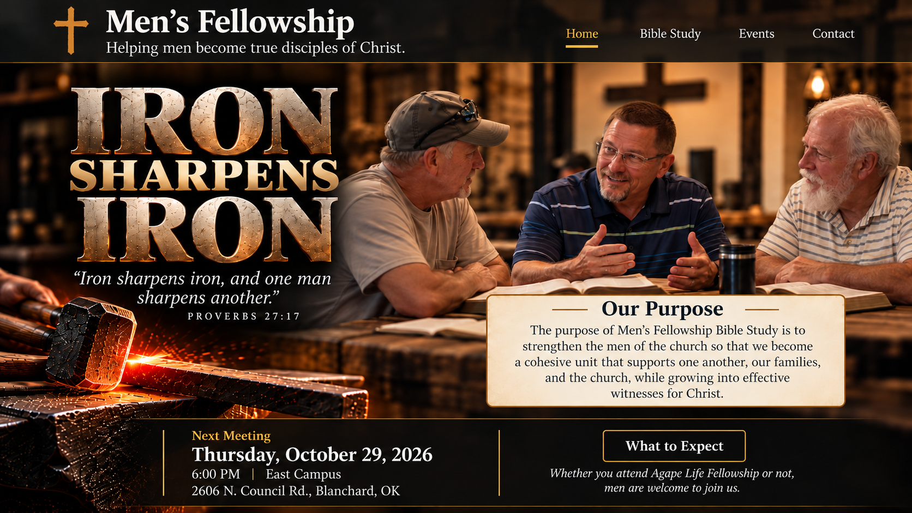

Men’s Fellowship
Men’s Fellowship is a place for men to gather around God’s Word, encourage one another, and build real fellowship.
You do not have to be a Bible expert. Come ready to read, listen, ask questions, discuss the passage, and learn together.
Bring your Bible, your questions, and come ready to participate.